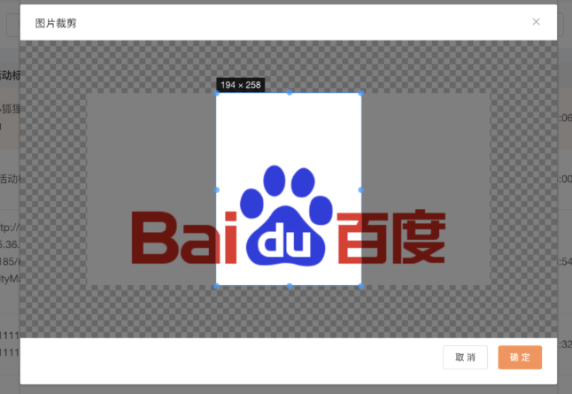

# 图片裁剪组件vue

<template>
<div>
<el-dialog
title="图片裁剪"
:visible.sync="show"
@close="close">
<div style="height: 400px;">
<VueCropper
ref="cropper"
v-bind:img="option.img"
:outputSize="option.size"
:outputType="option.outputType"
:info="true"
:full="option.full"
:canMove="option.canMove"
:canMoveBox="option.canMoveBox"
:original="option.original"
:autoCrop="option.autoCrop"
:fixed="option.fixed"
:fixedNumber="option.fixedNumber"
:centerBox="option.centerBox"
:infoTrue="option.infoTrue"
:fixedBox="option.fixedBox"
></VueCropper>
</div>
<span slot="footer">
<el-button size="small" @click="close('')">取 消</el-button>
<el-button size="small" type="primary" @click="cut">确 定</el-button>
</span>
</el-dialog>
</div>
</template>
<script>
import { VueCropper } from 'vue-cropper'
export default{
components:{
VueCropper
},
props:['isShow','imgUrl','callBack'],
data(){
return {
show:false,
option:{
img:'',
info: true, // 裁剪框的大小信息
outputSize: 1, // 裁剪生成图片的质量
outputType: 'png', // 裁剪生成图片的格式
canScale: true, // 图片是否允许滚轮缩放
autoCrop: true, // 是否默认生成截图框
autoCropWidth: 600, // 默认生成截图框宽度
autoCropHeight: 800, // 默认生成截图框高度
fixedBox: false, // 固定截图框大小 不允许改变
fixed: true, // 是否开启截图框宽高固定比例
fixedNumber: [3, 4], // 截图框的宽高比例
full: true, // 是否输出原图比例的截图
canMoveBox: true, // 截图框能否拖动
original: true, // 上传图片按照原始比例渲染
high: true,
centerBox: true, // 截图框是否被限制在图片里面
infoTrue: true // true 为展示真实输出图片宽高 false 展示看到的截图框宽高
}
}
},
methods:{
close:function(url=''){
this.$emit('update:isShow',false);
this.callBack && this.callBack(url);
},
// 将base64的图片转换为file文件
convertBase64UrlToBlob(urlData) {
let bytes = window.atob(urlData.split(',')[1]);//去掉url的头，并转换为byte
//处理异常,将ascii码小于0的转换为大于0
let ab = new ArrayBuffer(bytes.length);
let ia = new Uint8Array(ab);
for (var i = 0; i < bytes.length; i++) {
ia[i] = bytes.charCodeAt(i);
}
return new Blob([ab], { type: 'image/png' });
},
cut:function(){
this.$refs.cropper.getCropData((data) => {
this.$postWithFile('/system/base64UploadFile',{file:data.replace('data:image/png;base64,','')}).then(({code,obj})=>{
if(code == '00'){
this.$message({
message:'上传成功！',
type:'success'
})
this.close(obj);
// this.callBack && this.callBack(obj)
}
})
})
}
},
mounted(){
},
created(){
},
computed:{
},
watch:{
isShow:{
handler:function(v){
this.option = {
...this.option,
...{img:this.imgUrl}
}
this.show = v;
},
immediate:true
}
}
}
</script>
<style scoped>
</style>